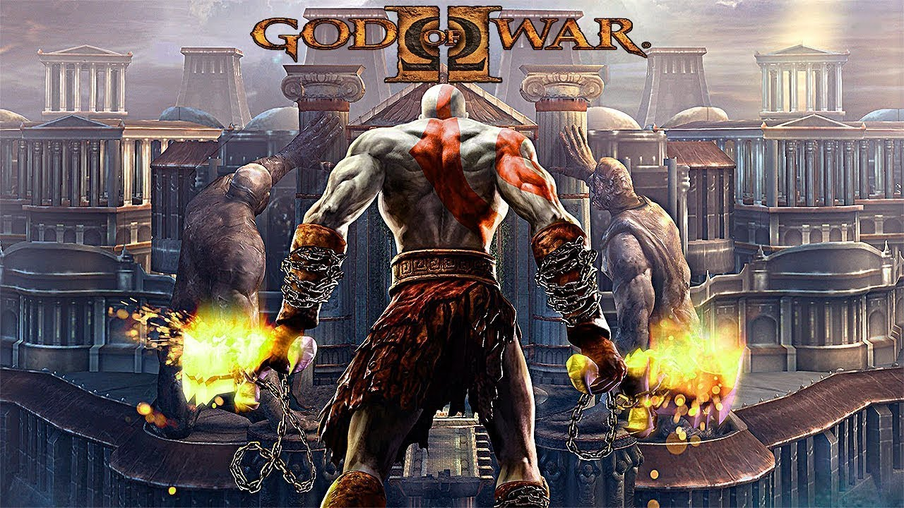

God of War II
God of War II, lançado em 2007 para PlayStation 2, continua a saga de Kratos. Agora como o novo Deus da Guerra, Kratos é traído por Zeus e busca vingança contra os deuses do Olimpo.
Novidades:
- Novas armas e habilidades
- Chefes épicos e colossais
- Gráficos ainda mais impressionantes
- Expansão da mitologia e do universo de God of War